| Ih in Sonia's model | Payne's kinetic model | |
| gbar (S/cm2) | 4e-5 | 5e-5 |
| Time Constant (ms) | 24.3 | 24.3 |
| Rin (MΩ) | 56.9 | 54.9 |
| Rebound Slope (mV/mV) | -0.17 | -0.21 |
| Temporal Summation (%) | 11.0 | 9.25 |
| Depolarizing Resonance Frequency (Hz) | 3.5 | 3.8 |
| Hyperpolarizing Resonance Frequency (Hz) | 4.5 | 4.7 |
| Vhalf (mV) | -81.1 | -81.4 |
| k (mV) | 7.90 | 7.42 |
| Time for Chirp Simulation (sec) | 28.55 | 29.54 |
Conclusion: Both models are good.
|
Start "Main.hoc". |
||
Measure membrane time constant:embrane time constant: |
||
|
Voltage and Current Traces Time constant = 24.3 (ms) 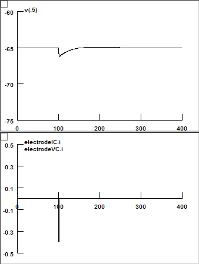 |
|
Measure Rin and Rebound Slope: |
||
|
Voltage and Current Traces: 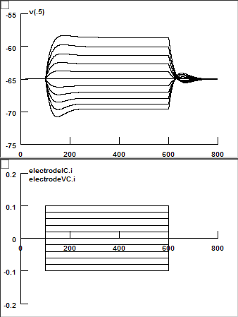 |
Rin = 54.9 (M Ohm) 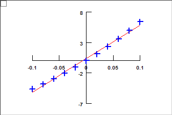 Rebound Slope = -0.21 (mV/mV) 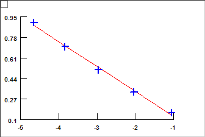 |
Temporal Summation: |
||
|
Temporal Summation = 9.25 (%) 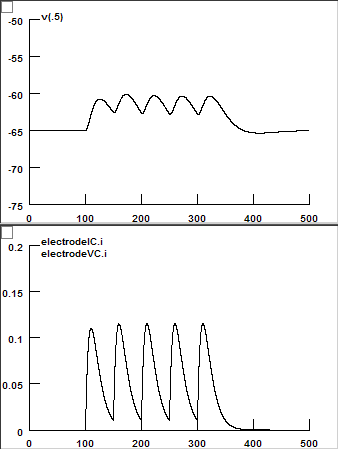 |
|
Chirp Experiment: |
||
|
Voltage and Current Traces: 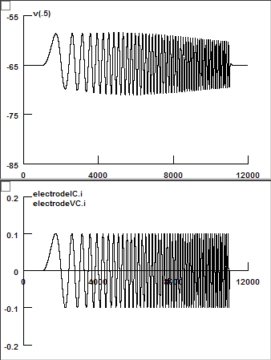 |
Impedance Amplitude: Depolarizing Resonance Frequency = 3.8 (Hz) Hyperpolarizing Resonance Frequency = 4.7 (Hz) 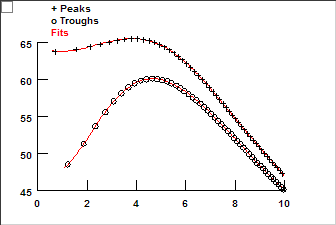 Voltage Lag: 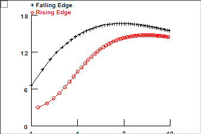 |
Voltage Clamp Experiment: |
||
|
Voltage and Current Traces: 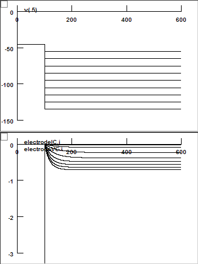 |
GV Curve: Vhalf = -81.4 (mV) k = 7.42 (mV) 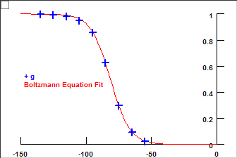 |
|
Voltage and Current Traces: 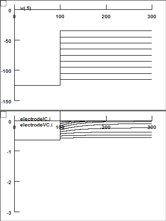 |
Tau: 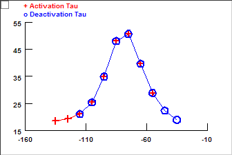 |